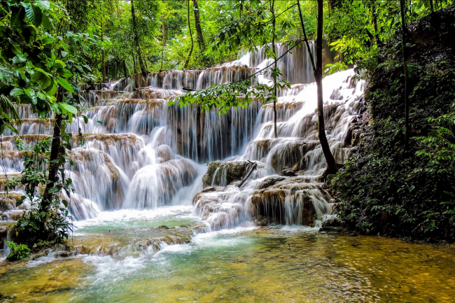
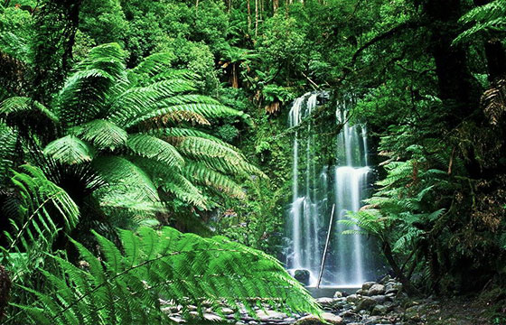

Este sitio es informativo. En él se va a tratar sobre los grandes rincones y alrededores de la selva enigmática de Chiapas y lo que podemos encontrar en tan bello sitio.
El objetivo de este sitio es dar a conocer lo que hay en cada uno de los lugares enigmáticos y cuál es su flora y fauna.
TIPO DE SITIO: Informativo.
SITIOS SIMILARES:
Especies en peligro de extinción
En este sitio se informará más a fondo sobre cómo es la selva de lacandona y de que se puede encontrar ahi, explicando la flora y fauna.
SITIOS BIBLIOGRAFICOS
| Nombre de la sección | Información | fotos |
| Animales | Los tipos de animales y cuales están en peligro de extisión | |
| Ecoturismo | Esta selva cuenta con increíbles zonas arqueológicas que prácticamente están sin descubrirse y que literalmente fueron devorados por la selva. Para poder conocer y adentrarse la selva lacandona se requieren los servicios de un lacandón. |
 |
| Vegetaciónn | Los tipos de plantas y frutas que se encuentran |  |